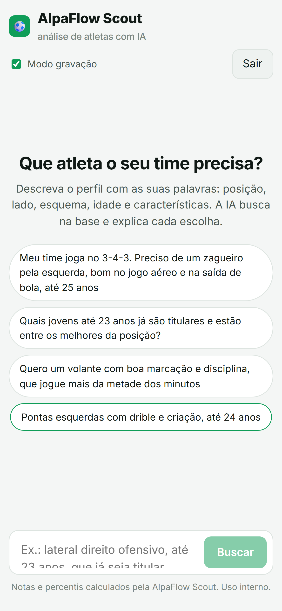
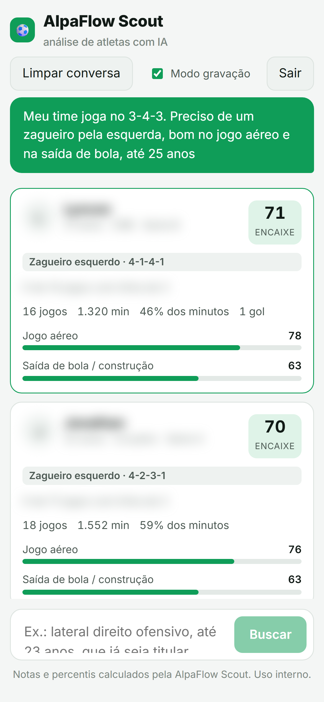
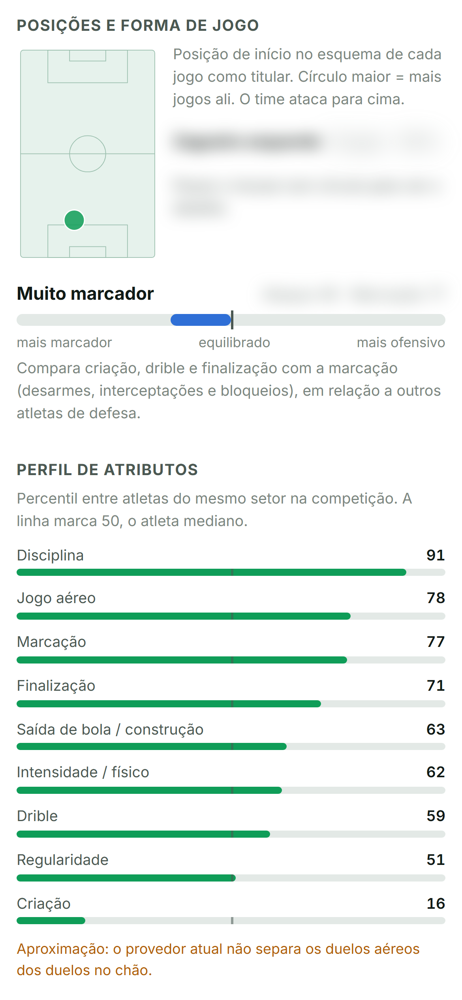

Em .NET 10. Você descreve o atleta que procura e ele explica quem se encaixa.

A IA traduz o pedido em filtros e pesos, consulta a base e devolve uma nota de encaixe de 0 a 100.

Onde atua no esquema, estilo de jogo e o perfil de atributos. Com um resumo escrito pela IA.
